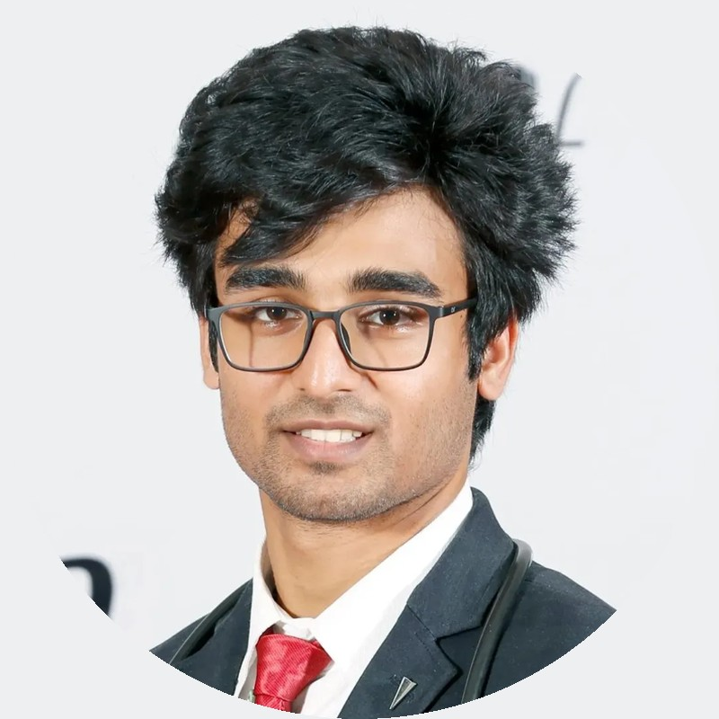
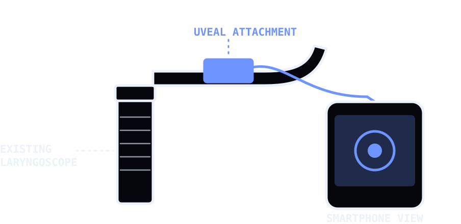
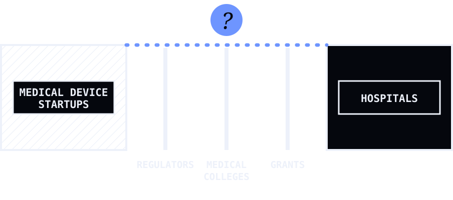

A video-laryngoscope costs lakhs. A doctor’s idea brings it to thousands.
A conversation with Dr. Maanas Jain, founder of Quintubate, on building medical devices for Indian healthcare.

Who he is
Dr. Maanas Jain’s profile lists MBBS at AIIMS Jodhpur and Internal Medicine at Rutgers University in the United States. Before starting residency, he set out to build Quintubate. He is its founder and CTO.
A cost that stands in the way
A standard laryngoscope costs roughly ₹1,000 to 2,000. In Dr. Jain’s own video, a video-laryngoscope is shown at ₹2,00,000 to ₹3,00,000. A video view of the airway helps the person intubating, the person learning and the record. It also sits out of reach of many hospitals.

What he built
UVEAL attaches to existing laryngoscopes and turns them into video-laryngoscopes that send the view to a smartphone. The company describes it as CDSCO certified and says it starts under ₹10,000. Dr. Jain says that in six months since commercialization, UVEAL is being used by 250+ doctors across India and 12 other countries. His video shows a real intubation at Civil Hospital, Gandhinagar.

Dr. Maanas Jain
In his words
“Quintubate is an initiative focussed on democratizing access to high-tech, expensive medical devices by manufacturing and developing existing, as well as novel, crucially important medical devices at a sustainable cost for Indian healthcare.”
“The medical device ecosystem is largely limited to a select few companies, all based internationally, and hence healthcare in India is not supportive of made-in-India devices. Clinicians are not aware, and are skeptical of Indian medical device startups.”
The bridges that need to be built
“There needs to be an ecosystem for hospitals to learn about new licensed products developed by medical device startups as well as an incentive to adopt such indigenously designed devices. Regulators, and medical colleges need to be on the lookout and supportive to push for the adoption of such devices to promote a culture of development.”

“Fostering dialogue between medical device startups and existing hospitals, and having the opportunity to present the work to them would greatly enhance the chances of adoption.”
The vision
“The trend of medical devices is towards consolidation of all high-tech products in a select few companies, none of which are based in India. If Indian [doctors and hospitals] do not push for development and adoption of indigenous devices, medical device innovation in India will inevitably stagnate.”
“There is a big opportunity. Since very few medical devices are actually made in India, there is a huge scope for founders to pitch in and innovate to fill that large gap.”
What he needs right now
Meetings with hospitals and administrators, to explain the device and explore how it can be procured and used.
Access to grants for new prototype development.
Hospital administrators and government healthcare officials who can help adopt it into clinical settings.
Do you know a hospital administrator, a regulator, a grant-maker or a medical college who should meet him? Tell us who, and Medinn will make the introduction through People of Healthcare.
Figures, product claims and views are Dr. Jain’s and Quintubate’s own unless stated, and have not been independently verified. Photo from Dr. Jain’s profile. People of Healthcare is an initiative of Medinn, by Dr. Sidharth Narayanan, House Surgeon, GMC Kozhikode.